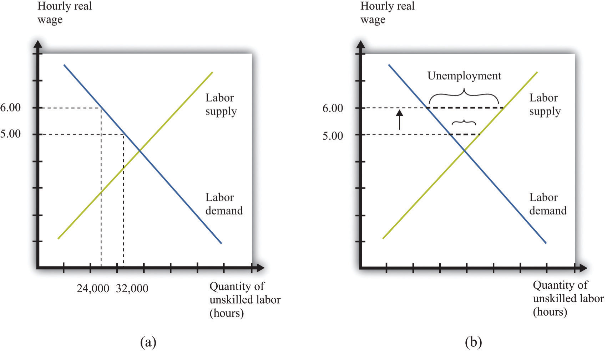
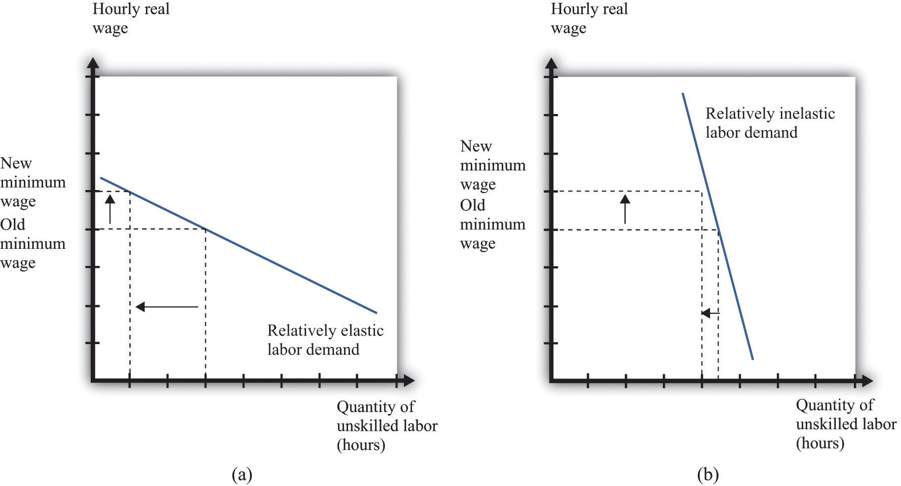
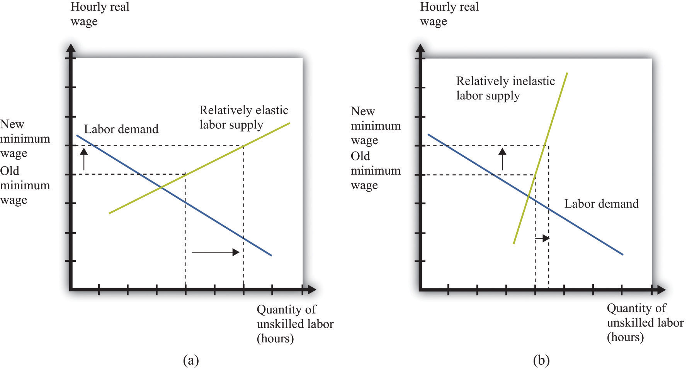

Suppose that the government is considering an increase in the minimum wage. What should we expect to happen? How will firms and workers respond? One might be tempted simply to ask firms what they would do in the face of an increase in the minimum wage. Unfortunately, this is likely to be both infeasible (or at least prohibitively expensive) and inaccurate. It would be an immense amount of work to interview all the firms in an economy. What is more, there is no guarantee that managers of firms would give accurate answers if they were asked hypothetical questions about a change in the minimum wage. Instead, government statisticians use statistical sampling techniques to interview a random sample of firms in an economy, and they ask them about their actual behavior—they ask questions such as the following: “How many workers do you employ at present?” and “How much do you pay them?” The data from such surveys are useful but do not directly help us determine the effects of a change in the minimum wage. For this we need more theory.
Figure 11.10 "Effects of Increasing the Real Minimum Wage" amends our view of the labor market to show an increase in the minimum wage from $5 to $6. (We suppose that the price level is constant, so an increase in the nominal minimum wage implies an increase in the real minimum wage.) The increase in the minimum wage leads to a reduction in the level of employment: employment decreases from 32,000 to 24,000. Labor is now more expensive to firms, so they will want to use fewer hours. At the same time, the higher minimum wage means that more people would like jobs. The increase in the amount of labor that people would like to supply, and the decrease in the amount of labor that firms demand, both serve to increase unemployment.
Figure 11.10 Effects of Increasing the Real Minimum Wage
An increase in the value of the hourly real minimum wage from $5 to $6 leads to a decrease in employment from 32,000 hours to 24,000 hours (a) and an increase in unemployment (b).
Our model generates a qualitative prediction: an increase in the minimum wage will decrease employment and increase unemployment. At the same time, the wage increase will ensure that those with jobs will earn a higher wage. So we can see that there may be both advantages and disadvantages of increasing the minimum wage. To go further, we have to know how big an effect such a change would have on employment and unemployment—that is, we need the quantitative effects of a higher minimum wage.
To understand the quantitative effects, we want to know when to expect big or small changes in employment or unemployment—which depends on the wage elasticity of labor demandThe percentage change in the quantity of labor demanded divided by the percentage change in the wage. and the labor supply. Remembering that the wage is simply the price in the labor market, the wage elasticity of demand is an example of the price elasticity of demandThe percentage change in the quantity demanded in the market divided by the percentage change in price. in a market:
From Figure 11.10 "Effects of Increasing the Real Minimum Wage", we can see that the wage elasticity of labor demand tells us everything we need to know about the effects of a change in the wage on employment. If the demand curve is relatively elastic, then a change in the minimum wage will lead to a relatively large change in employment. If the demand curve is relatively inelastic, then a change in the minimum wage will lead to a relatively small change in employment. This is intuitive because the elasticity of labor demand tells us how sensitive firms’ hiring decisions are to changes in the wage. An elastic demand for labor means that firms will respond to a small change in the wage by laying off a large number of workers, so the employment effect will be large. The elasticity of labor supply is not relevant if we are concerned only with employment effects. This is illustrated in Figure 11.11 "The Employment Effect of a Change in the Minimum Wage" and summarized in Table 11.1 "Employment Effects of a Change in the Real Minimum Wage".
Figure 11.11 The Employment Effect of a Change in the Minimum Wage
If labor demand is relatively elastic (a), a change in the minimum wage has a big effect on employment, while if labor demand is relatively inelastic (b), the same change in the minimum wage has a much smaller effect on employment.
Table 11.1 Employment Effects of a Change in the Real Minimum Wage
| Effect on Employment | |
|---|---|
| Elastic demand | Large change |
| Inelastic demand | Small change |
If we are interested in the effect on unemployment, however, we must look at both demand and supply. A worker is counted as unemployed if he or she is looking for a job but does not currently have a job. The labor supply curve tells us how many workers are willing to work at a given wage; those who are not employed are looking for a job. To understand the effects of the minimum wage on unemployment, we need to look at the mismatch between supply and demand at the minimum wage, so we must look at the supply of labor as well as the demand for labor. The price elasticity of supplyThe percentage change in the quantity supplied to the market divided by the percentage change in price. measures the responsiveness of the quantity supplied to a change in the price: in the case of the labor market, we obtain the wage elasticity of labor supplyThe percentage change in the quantity of labor supplied divided by the percentage change in the wage.:
Toolkit: Section 31.2 "Elasticity"
You can review the general definition and calculation of elasticities in the toolkit.
The more elastic the labor supply curve, the bigger the change in labor supply for a given change in the real wage (Figure 11.12 "The Unemployment Effect of a Change in the Minimum Wage"). A bigger change in labor supply means a bigger change in unemployment. Combining this with Table 11.1 "Employment Effects of a Change in the Real Minimum Wage", we get the results summarized in Table 11.2 "Unemployment Effects of a Change in the Real Minimum Wage". If demand and supply are both inelastic, the change in the minimum wage has little effect on unemployment. The higher wage does not make much difference to firms’ hiring decisions (inelastic demand), and it does not induce many additional workers to look for a job (inelastic supply). The overall effect on unemployment is small. By contrast, if both curves are elastic, then an increase in the wage will lead to a big decrease in the number of jobs available and a big increase in the number of job seekers. If we can find good estimates of the elasticities of labor demand and supply, we will be able to make good predictions about the likely effect of an increase in the minimum wage.
Figure 11.12 The Unemployment Effect of a Change in the Minimum Wage
If the labor supply is relatively elastic (a), a change in the minimum wage has a big effect on unemployment, while if the labor supply is relatively inelastic (b), the same change in the minimum wage has a much smaller effect on unemployment.
Table 11.2 Unemployment Effects of a Change in the Real Minimum Wage
| Effects on Unemployment | ||
|---|---|---|
| Elastic Supply | Inelastic Supply | |
| Elastic demand | Very large change | Large change |
| Inelastic demand | Large change | Small change |